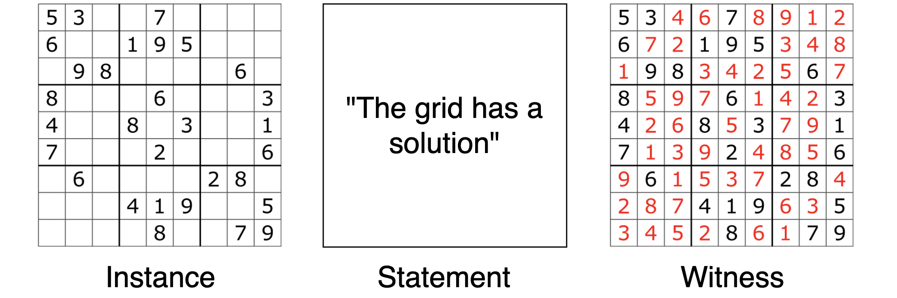

SNARK
Contenu
SNARK¶
Acronym: succinct non-interactive argument of knowledge. An argument system in which a Prover can produce a short, single-message proof attesting that she knows some information that shows the truth of a statement.
In this article, we will define a number of notions relevant to proof systems and SNARKs by using the example of a Sudoku grid. Look out for words in bold: these are common jargon words which get mapped to our simple example.
Statement, Instance and Witness¶
Let’s consider a Sudoku grid, a specific instance of a problem. Alice makes the following statement: “This grid has a solution”. If it exists, this solution would be a witness to the fact that the statement is true. But maybe the grid is hard to solve and just looking at the instance (the grid) is not enough to be convinced that a witness (a solution) exists. What can Alice do to convince us that the witness exists?

Proof vs Argument¶
To support her statement, Alice shows us that the Sudoku grid has been published in many well-known and respected newspapers. In most cases this would be enough to convince us that the statement is true: surely they wouldn’t publish a “wrong” grid. However, if Alice were very powerful she could have been able to produce modified copies of the papers, or pay the news editors to include an unsolvable grid. Because there is still a small chance that Alice is cheating, we do not say that Alice produced an irrefutable proof but rather say that Alice has produced an argument.
More formally, a proof cannot be falsified by a computationally unbounded adversary. On the other hand an argument can be falsified by such an adversarial prover. In practice, the bound can be set so high that we estimate that no entity in the world would be able to reliably operate above such a bound. With that in mind, we often abuse the distinction above and use the word “proof” to describe the outputs of both a proof system and an argument system.
Arguments of Knowledge¶
Notice that in her argument, Alice showed the existence of the witness but may not know the witness herself. What if her statement was “I know the solution to this grid”? Here, Alice would have to produce an argument of knowledge, one by which she can convince us that she knows the solution to the Sudoku. The most naive approach to demonstrate knowledge would simply be for Alice to show us the witness. Since it is impossible to show us the solution without knowing it, this would constitute a proof of knowledge. While this proof of knowledge is non-interactive, it is not succinct: the message that Alice sent is of the same size as the witness. Can we do any better?
SNARKs¶
We finally get to the notion of a SNARK: a succinct non-interactive argument of knowledge. We have already learnt from the above that an argument of knowledge allows a bounded prover to show that she knows the witness that supports a statement. The additional properties of a SNARK are:
succinctness: the proof is substantially shorter than the statement or the witness.
non-interactive: the proof is contained in a single message.
A SNARK can optionally implement the zero-knowledge property: such a SNARK reveals no information about the witness other than what can be implied by evaluating the truth of the statement. We call such a SNARK a zkSNARK (zero-knowledge SNARK). In our case, Alice could convince us that she knows the solution to the Sudoku without giving us any hints as to what the solution is!
SNARKs in Practice [Advanced]
In practice we do not look at Sudokus but instead consider an arithmetic circuit. The circuit and any public inputs are the instance (just like the Sudoku 9x9 grid and the numbers that already populate it), the statement is the claim that the circuit can evaluate to a desired value, and the witness is all the prover-chosen inputs and intermediate values in the circuit. A famous result of complexity theory shows that any provable statement can be converted into this form (namely that the circuit satisfiability problem is NP-complete).
We can write a proof for the statement about the circuit by expressing everything as polynomials and running a polynomial interactive oracle proof. This proof can then be made non-interactive by using the Fiat-Shamir heuristic, and succinct by using a polynomial commitment scheme.
Note that this description only reflects current popular strategies for SNARKs as seen in Marlin or PlonK. Other strategies have been developed, such as those employed in building STARKs, and some are yet to be discovered.
See also: instance, witness, common reference string, structure reference string, trusted setup, preprocessing SNARK